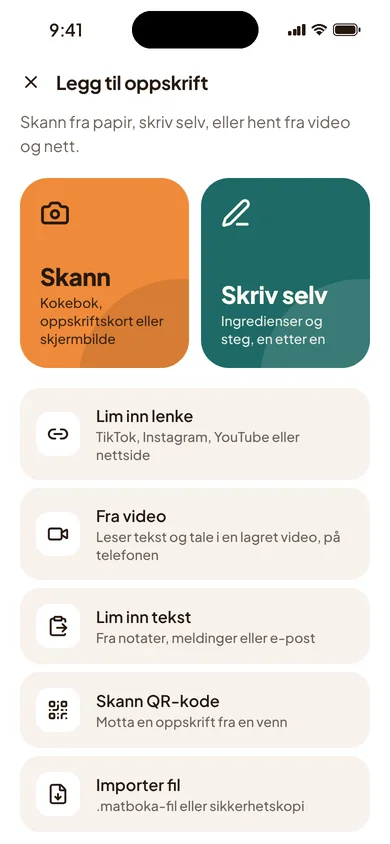
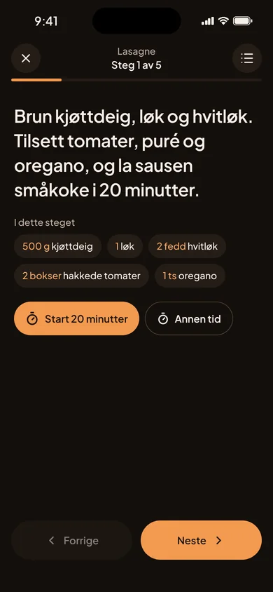
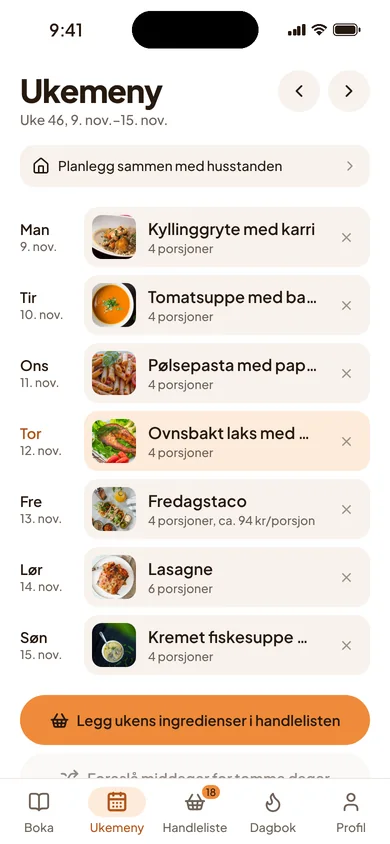
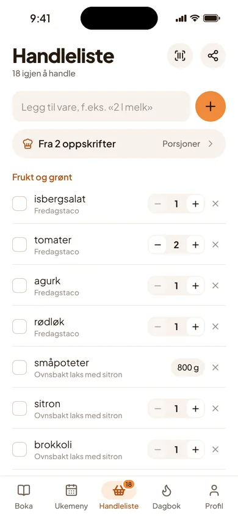
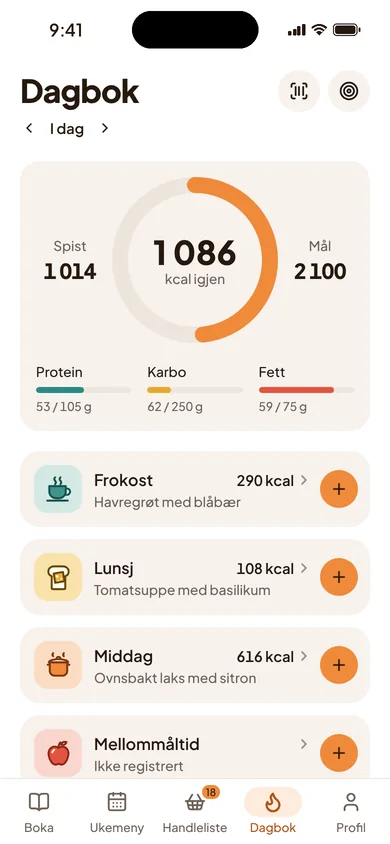
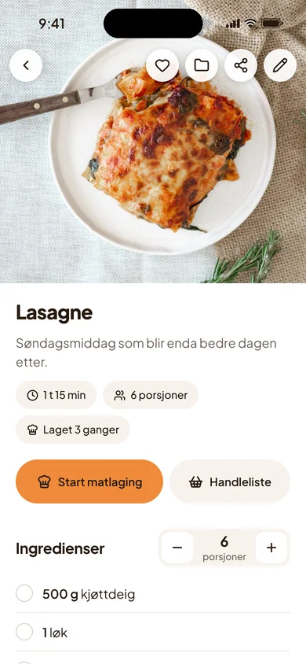

Din norske kokebok
Matboka samler oppskriftene dine fra TikTok, nettsider og bestemors oppskriftskort i en app. Lag maten uten nett, planlegg uka og del med venner.
Lagre fra hvor som helst
Matboka gjør det du finner, om til en ryddig oppskrift med ingredienser og steg. Du ser hva som ble tolket, før du lagrer.
Skann
Ta bilde av en kokebokside, et oppskriftskort eller et skjermbilde. Teksten leses på telefonen.
Lim inn lenke
Fra TikTok, Instagram, YouTube og de fleste oppskriftssider.
Fra video
Velg en video du har lagret. Matboka leser teksten i bildet og hører hva som blir sagt.
Skriv selv
Ingredienser og steg, en etter en.

Ett steg om gangen
Kokemodus viser ett steg i stor skrift og holder skjermen våken mens du lager maten. Står det «la småkoke i 20 minutter», starter du tidtakeren med ett trykk.
Flere tidtakere kan gå samtidig, og de ringer selv om telefonen er låst.
Oppskriftene ligger på telefonen, så de virker på hytta uten dekning.

Fra ukemeny til handlelapp
Velg middager for uka, skriv «Rester», eller la Matboka foreslå noe til de tomme dagene. Ett trykk legger alt du trenger i handlelisten, slått sammen og sortert etter avdelingene i butikken.
Er du tom for noe, skanner du strekkoden rett inn i lista.
Med Pluss ser du omtrent hva maten koster, og hvilken kjede som er billigst.


Kaloriene, uten styr
Skann strekkoden på pakken, søk blant over 2000 matvarer fra Matvaretabellen, eller legg inn en oppskrift fra boka. Matboka regner ut næringen per porsjon for deg.
Måltidene står som korte kort, og du ser protein, karbohydrat og fett mot dagsmålet.
Kaloritellingen er gratis, og du kan slå den av hvis du ikke vil se den.

Del med venner
Send en oppskrift som lenke, QR-kode eller fil. Har vennen din Matboka, åpnes den rett i appen. Hvis ikke, vises den her på matboka.no.
Med en gratis konto kan dere bli venner i appen og se oppskriftene hverandre deler.
Lenken inneholder hele oppskriften, så den virker uten konto.

Det meste er gratis
Matboka Pluss er for deg som vil ha boka på flere enheter, se hva maten koster eller planlegge middagene sammen med husstanden.
Gratis
Uten konto og uten reklame
- Oppskrifter, skanning og import fra lenker og video
- Kokemodus med tidtakere
- Handleliste og ukemeny
- Kaloritelling med strekkodeskanner
- Venner og deling med lenke, QR-kode og fil
- Sikkerhetskopi til en fil
Matboka Pluss
49 kr i måneden eller 399 kr i året
- Boka og dagboka synket mellom telefon og nettbrett
- Priser fra butikkene på handlelisten, ukemenyen og oppskriftene
- Prisvarsler, og billige middager hver torsdag
- Felles ukemeny for husstanden, og alle i husstanden (opptil seks) får Pluss
14 dager gratis første gang. Du sier opp i App Store eller Google Play.
Last ned Matboka
Gratis for iPhone, iPad og Android.